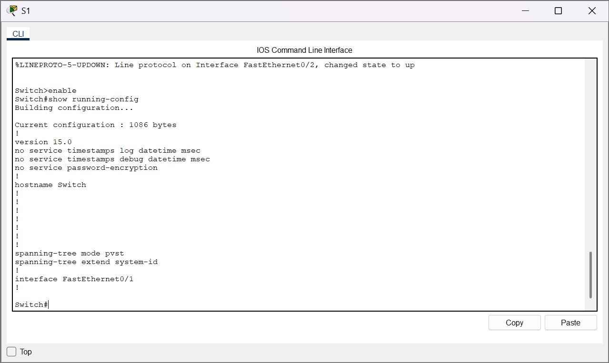
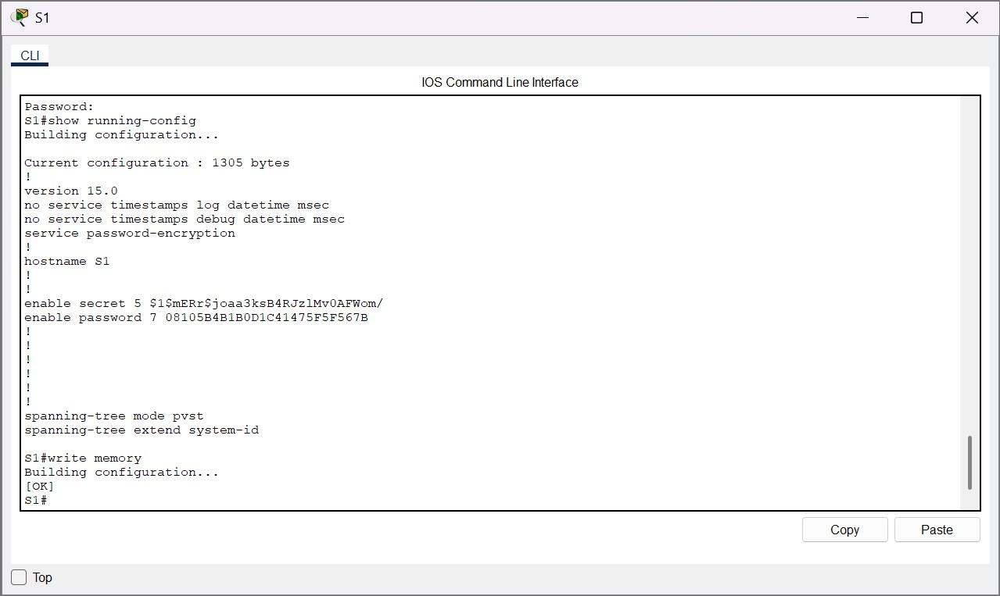

Configuration des paramètres initiaux d'un commutateur
Présentation
Dans le cadre de ma formation, j’ai réalisé un TP Cisco Packet Tracer portant sur la configuration initiale d’un commutateur.
L’objectif était de préparer un commutateur Cisco à son utilisation dans une infrastructure réseau en configurant les paramètres de base.
Objectifs
Renommer le commutateur.
Sécuriser l’accès à la console.
Protéger l’accès au mode privilégié.
Chiffrer les mots de passe.
Ajouter une bannière MOTD.
Sauvegarder la configuration.
Environnement technique
Logiciel : Cisco Packet Tracer
Équipements : commutateurs Cisco
Interface : CLI Cisco IOS
Topologie
La topologie est composée de deux commutateurs, S1 et S2, reliés à deux postes clients.
Cette architecture permet de simuler une configuration de base d’équipements réseau Cisco.
Étape 1 – Vérification de la configuration initiale
Je suis d’abord entré dans le commutateur S1 en ouvrant son interface CLI afin d’accéder à l’environnement de commandes Cisco IOS.
J’ai commencé par afficher la configuration active du commutateur avec la commande show running-config.
Cette consultation m’a permis de vérifier l’état initial de l’équipement, d’identifier les paramètres déjà présents et de disposer d’un point de comparaison avant d’appliquer les modifications.

Configuration initiale du commutateur.
Étape 2 – Configuration du commutateur
J’ai renommé le commutateur avec la commande hostname S1 afin d’identifier clairement l’équipement dans la topologie.
J’ai sécurisé l’accès à la console avec les commandes line console 0, password [mot_de_passe] et login afin d’imposer une authentification lors de l’ouverture de la CLI.
J’ai configuré un premier mot de passe pour l’accès au mode privilégié avec la commande enable password [mot_de_passe], puis j’ai activé la commande service password-encryption afin de chiffrer les mots de passe visibles dans la configuration.
J’ai ensuite renforcé la protection du mode privilégié avec la commande enable secret [mot_de_passe_secret], qui permet de définir un mot de passe secret chiffré pour l’accès administrateur.
Enfin, j’ai ajouté une bannière d’avertissement avec la commande banner motd afin d’informer que l’accès au système est réservé aux personnes autorisées.
Étape 3 – Vérification de l’accès sécurisé
Après la configuration, j’ai fermé puis rouvert l’interface CLI du commutateur S1 afin de tester l’accès comme lors d’une nouvelle connexion.
J’ai pu constater que la bannière MOTD s’affichait correctement avant l’accès à l’équipement.
J’ai également vérifié que les mots de passe étaient bien demandés et, après essai, qu’ils permettaient d’accéder aux niveaux d’administration attendus.
Étape 4 – Vérification finale et sauvegarde
J’ai de nouveau affiché la configuration active du commutateur avec la commande show running-config.
J’ai pu constater que plusieurs paramètres configurés étaient bien présents : le nom d’hôte S1, l’activation du chiffrement des mots de passe, ainsi que les mots de passe du mode privilégié configurés avec enable password et enable secret.
J’ai donc sauvegardé la configuration avec la commande write memory afin qu’elle soit conservée après redémarrage du commutateur.

Résultat obtenu
Nom d’hôte configuré.
Accès console protégé.
Mode privilégié sécurisé.
Mots de passe chiffrés.
Bannière MOTD affichée.
Configuration sauvegardée.
Compétences mobilisées
Gérer le patrimoine informatique
Identification et configuration d’un équipement réseau.
Mettre à disposition un service informatique
Préparation d’un commutateur utilisable dans une infrastructure réseau.
Répondre à un besoin d’évolution
Sécurisation des accès d’administration du commutateur.
Développer sa présence professionnelle
Documentation d’une réalisation professionnelle dans le portfolio.
Administration réseau SISR
Utilisation de Cisco IOS et de Packet Tracer pour configurer un équipement réseau.
Bilan personnel
Ce TP m’a permis de mieux comprendre les bases de l’administration d’un commutateur Cisco.
J’ai appris à utiliser les principaux modes de configuration IOS, à sécuriser les accès d’administration et à vérifier les paramètres appliqués.
Cette réalisation est importante car la configuration initiale d’un équipement réseau est une étape essentielle avant sa mise en production.